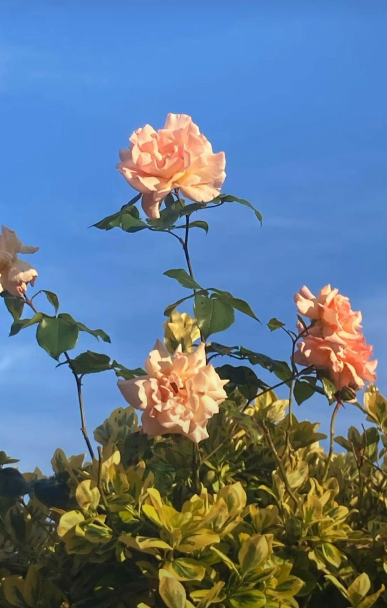

Nilufer Aliyeva

I was born on July 6, 2004, in Baku.
I had lived 11 years in Sumgayit.
I studied elementary school (1-4 grade) at secondary school No.19 in Sumgayit, Haji Zeynalabdin Tagiyev.
During, 2-4th grades, I had participated in art competitions in Sumgayit and Baku and take the second place.
Then, I got accepted to Natural Sciences oriented Gymnasium in Sumgayıt, Technical-Humanitarian Sciences Lyceum No. 2 named after Habib bey Mahmudbeyov and Slavic lyceum attached to Baku Slavic University.
Then, I decided to study 5th grade at Technical-Humanitarian Sciences Lyceum No. 2.
In 2015, I got accepted to Baku Turkish Lyceum of Turkey Diyanet Foundation and finished my 6-11th grade there.
During 9-11th grades I participated in Math Olympiads and in intellectual games organized by the school.
I also attended to YÖS (International student examination for higher education in Turkey) courses and in 2020, I give exam and got accepted to Ankara University (Molecular biology and genetics major) in Turkey.
Also, I have certificates from TYS (Turkish Proficiency Exam), SAT, TOEFL exams.
Therefore, I got accepted to ADA University.
Now I am studying in the first year in the faculty of Computer Engineering.
Khanlar Abbasov

I was born on September 25, 2004, in Baku, the capital city of Azerbaijan.
I received my primary education at secondary school No. 28 in Nasimi district and continued my secondary education at the "Young Talents" lyceum attached to BSU (Baku State University).
During my school years, I have participated in many competitions on Informatics, Math and Physics and succeeded in most of them such as taking 1st place in the School Informatics Olympiad, 2nd in Physics and Math Olympiad.
Thanks to these achievements, I have been selected to the Olympiad team of our school and started to represent my school in National Informatics Olympiads.
Having been going through olympiad training, involved in classes of the most specialized olympiad instructors of the country, my efforts were paid off and I placed among medalists in the Republican Informatics Olympiads in 2019, 2020, and 2021.
Moreover, I participated in some international olympiads and training such as the Asia-Pacific Informatics Olympiad, International Autumn Tournament of Informatics and Moscow Workshops.
The more I was involved in scientific competitions, the more my problem-solving skills developed, leading me to be more interested in programming.
As the result, all these achievements helped me get a gold medal from school and to be accepted to the ADA University after graduation from high school.
Now I am studying in the first year in the Department of Computer Science at ADA University.
Alsu Alakbarli
I was born on August 19, 2004, in Moscow, the capital city of Russia.
When I was 40 days old, we came to Baku.
I received my both primary and secondary education at secondary school No.254 in Xatai district.
During my school years, I have participated in many competitions on different activities.
I took first place in School Math Olympiad and in School English Olympiad two times, second place in School Tennis Olympiad, and first place in Logic Olympics in Lutfi Zade.
After, I started to prepare to SAT exam in tenth grade.
In 3 months, I took a SAT exam, and I received 1340 points from 1600.
I also took Duolingo online-exam, and it helps me to take my education in English.
Computer Science is a big and interesting faculty.
You can build a world according to your imagination.
Making different codes, websites, and games according to my interests is incredible for me.
That’s why I chose Computer Science.
In the end, I am studying in the first year in the faculty of Computer Science at ADA University.
Raul Gadzhiev
I was born in Volgograd (Russian Federation) on July 17, 2002.
I have finished my education at school #134 in the same city.
Now, I am a student of the great university ADA.
I have numerous achievements, but I will talk only about important and only one side.
I am a hacker, not that you can imagine like a bad person steals other people's money.
I am a white hacker, which means that I find vulnerabilities and report them to companies.
Among big hacks, there is Google, Github, VK, OK, TikTok, Epic Games, Sony, Mail Ru and so on.
This part of my life decided my entry to ADA.
That is about now, I am still trying to improve myself and study IT at ADA university.